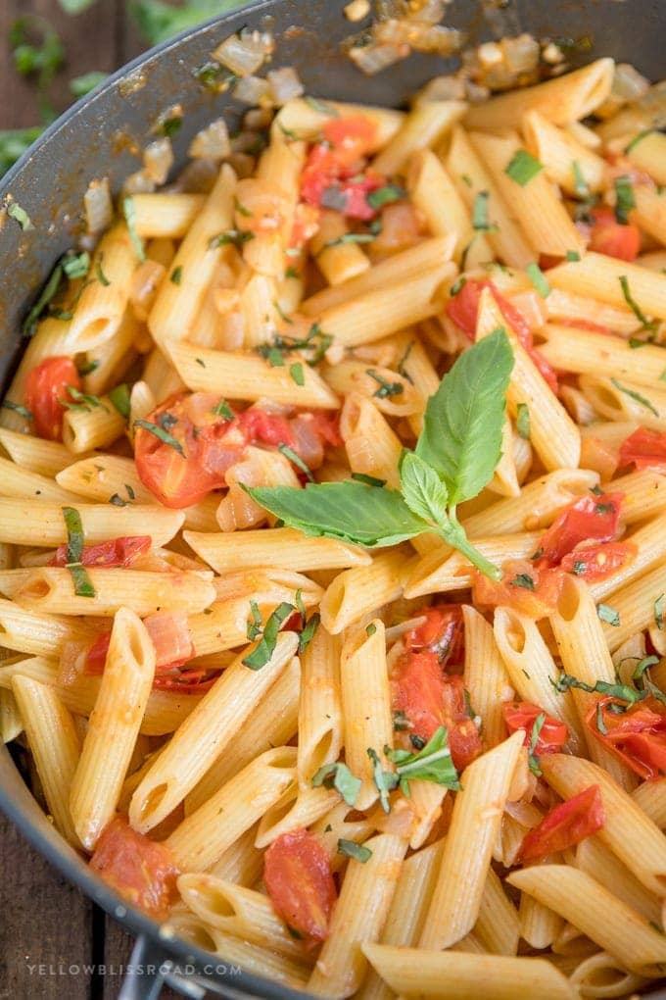

Hiking is a fantastic way to connect with nature and get some exercise. I recently went on a hike in the mountains, and the views were breathtaking. The fresh air and the sounds of the forest were incredibly relaxing. I highly recommend trying it out!
I love to cook, and I've been experimenting with some new recipes lately. One of my favorites is a simple pasta dish with fresh tomatoes and basil. Another is a homemade pizza with a crispy crust. I'll be sharing the recipes soon!
In the hustle and bustle of daily life, it's easy to get caught up in the 'doing' and forget about the 'being'. I've been feeling the need to slow down and reflect lately, to really examine where I'm at and where I want to go. Self-reflection isn't always comfortable. It can involve confronting uncomfortable truths or acknowledging areas where I need to grow. But it's also incredibly valuable. By taking the time to look inward, I can gain a clearer understanding of my values, my priorities, and my goals. I've been thinking about: *What am I grateful for?* Focusing on gratitude helps me appreciate the good in my life. *What have I learned recently?* Every experience, good or bad, offers an opportunity for learning. *What can I do to improve?* There's always room for growth, and identifying areas for improvement is the first step. *How am I spending my time?* Is it aligned with my priorities? *What brings me joy?* It's essential to make time for things that nourish my soul. I've found that journaling, meditation, and spending time in nature are helpful tools for self-reflection. Even a few minutes of quiet contemplation can make a difference. I encourage you to take a moment for yourself today. Step away from the distractions and ask yourself some tough questions. You might be surprised at what you discover. What are your favorite ways to self-reflect? Share your thoughts in the comments!
Leave a Comment: